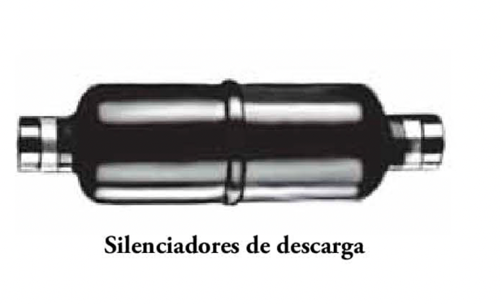

Una vez acomodado se le pregunta que desea tomar y si tiene alguna intolerancia o alergia alimentaria
- Servicio de bebidas frías o calientes, procedimientos El cliente ya tiene la carta en la mesa
Las servilletas de cóctel estarán en soporte de metacrilato corporativo Se mantiene el uso del posavasos
El acompañamiento de bebidas frías se servirá al centro
El acompañamiento de bebidas calientes será una chocolatina regional
ATENCIONES EN EL SERVICIO DE CAFETERÍA
No podemos olvidar y restar importancia a la regionalidad que es la base de la gastronomía de Paradores, es por ello por lo que los acompañamientos estén basados en productos que van a dar identidad.
La base será la misma, una chocolatina, pero los productos que la contienen se identifican con fruta deshidratada o frutos secos de cada una de las regiones.
Se han desarrollado 17 versiones cada una identificada con una región:
Andalucía: Chocolate, almendra, mango y fresa deshidratados
Aragón: Chocolate, orejones y almendra
Canarias: Chocolate, piña, deshidratada, papaya deshidratada y plátano
Cantabria: Chocolate, avellana y kiwi deshidratado
Castilla la Mancha: Chocolate, pistacho y melón deshidratado
Castilla y león; Chocolate, fresa deshidratada, piñones y pipas de calabaza pelada
Cataluña: Chocolate, manzana deshidratada y avellana
Ceuta y Melilla: Chocolate, dátil y flor de hibisco deshidratada
Comunidad de Madrid: Chocolate, almendra y melón deshidratada
Navarra: Chocolate, arándano deshidratado y pipas de calabaza pelada
Valencia: Chocolate, dátil, ralladura de naranja y limón
Extremadura: Chocolate, higo seco y pistacho
Galicia: Chocolate, kiwi deshidratado y nueces
La Rioja: Chocolate, uvas pasas y arándano deshidratado
País vasco: Chocolate, arándano deshidratado y nueces
Principado de Asturias: Chocolate, manzana deshidratada, arándano deshidratado y maíz frito (kiko)
Región de Murcia: Chocolate, ralladura de limón y pipas de calabaza pelada
Receta de chocolatina :
Ingredientes para realizar 100 unidades de chocolatina regional :
Ingrediente | Cantidad | Alérgeno |
Cobertura de chocolate negro | 70% 500 gr | lácteo y soja |
Cobertura de chocolate blanco | 100 gr | lácteo y soja |
Frutos secos | 25 gr | frutos secos y trazas |
Frutas deshidratadas | 25 gr | trazas |
Pasos para la elaboración
Paso 1 Picar las frutas deshidratadas y laminar los frutos secos en trozos pequeños. Reservar. | Paso 2 Se derrite la cobertura de chocolate negro y blanco por separado En una placa disponer papel sulfurizado y con una cuchara de café con leche se echa el chocolate. | Paso 3  Con un tenedor echar el chocolate blanco en hilo sobre el chocolate negro. |
Paso 4 | Paso 5 | Paso 6 |
Disponer por encima las frutas deshidratadas y los frutos secos picados correspondiente a la región. Dejar enfriar.
Una vez frías separar del papel sulfurizado y conservar en un recipiente de plástico con tapa debidamente etiquetado y fechado.
Conservar en cámara frio en cocina y bar (Tª ≤4ºC) durante un máximo de 5 días (según vida útil realizada)
Vajilla a usar:
Plato de pan blanco
Entremesera
Rabanera
Plato de café moka
Servicio de pan:
Se servirá en bolsa establecida de papel , una por comensal con los panes que estime cada establecimiento
Servicio de bebidas:
Solicitado por el cliente se le sirve
Servicio de AOVE, sal y pimienta:
No se hará uso del salero, sino de monodosis de sal y pimienta, 1 de cada referencia en una cunca, así como el AOVE y vinagre en botella de 20 ml para aderezo de ensaladas